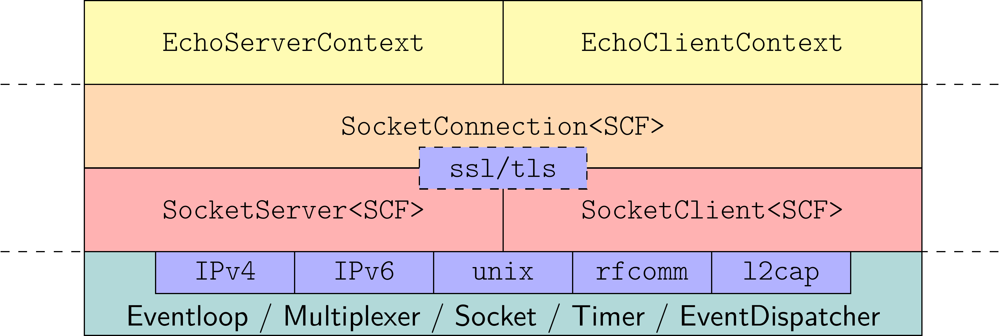

- Generated on Mon Mar 31 2025 11:57:04 for SNode.C by
 1.11.0
1.11.0
|
SNode.C
|
(API documentation) is a very simple to use, lightweight, highly extensible, event driven, layer-based framework for network applications in the spirit of node.js written entirely in C++.
The development of the framework began during the summer semester 2020 as part of the course Network and Distributed Systems in the master's program Interactive Media at the department Informatics, Communications and Media at the University of Applied Sciences Upper Austria, Campus Hagenberg, to give students an insight into the fundamental techniques of network and web frameworks.
Main focus (but not only) of the framework is on Machine to Machine (M2M) communication and in particular on the field of Internet of Things (IoT). As such, the SNode.C reference project MQTTSuite exists, which provides MQTTBroker, MQTTIntegrator, and MQTTBridge applications.
SNode.C is dual-licensed under MIT and LGPL-3.0 (or any later version). You can choose between one of them if you use this work.
SPDX-License-Identifier: MIT OR LGPL-3.0-or-later
Volker Christian (me@vchrist.at or Volker.Christian@fh-hagenberg.at)
Some components are also copyrighted by students:
The architecture of every server and client application is basically the same and consists of three components.
SocketServer respective SocketClient instanceSocketContextFactorySocketContextLet\'s have a look at how these components are related to each other by implementing a simple networking application.
Imagine we want to create a very basic TCP (stream)/IPv4 (in) server/client pair which sends some plain text data unencrypted (legacy) to each other in a ping-pong fashion.
The client starts to send text data to the server and the server reflects this data back to the client. The client receives the reflected data and sends it back to the server again. This data-ping-pong should last infinitely long.
The code of this demo application can be found on github.
SocketServer and SocketClient InstancesFor the server role we just need to create an object of type
called *server instance* and for the client role an object of type
is required, called *client instance*.
A class SocketContextFactory is used for both instances as template argument. Such a SocketContextFactory needs to be provided by the user and is used internally by the SocketServer and the SocketClient instances to create a concrete SocketContext object for each established connection.
The SocketContext class must also be provided by the user and represents a concrete application protocol.
Therefore, for our echo application, we need to implement the application protocol for server and client in classes derived from core::socket::stream::SocketContext, the base class of all connection-oriented (stream) application protocols, and factories derived from core::socket::stream::SocketContextFactory.
Note: Both, SocketServer and SocketClient classes have, among others, a default constructor and a constructor expecting an instance name as argument.
std::string is used.SocketContextFactory ClassesLet\'s focus on the SocketContextFactory classes for our server and client first.
All what needs to be done is to implement a pure virtual method create() witch expects a pointer to a core::socket::stream::SocketConnection as argument and returns a pointer to a concrete SocketContext.
The core::socket::stream::SocketConnection object involved is managed internally by SNode.C and represents the network connection between a server and a client. It is responsible for handling the physical data exchange and, in case of a SSL/TLS-secured connection, for encryption resp. decryption.
SocketContextFactoryThe create() method of our EchoServerContextFactory returns a pointer to the EchoServerContext whose implementation is presented in the SocketContext Classes section below.
Note: A pointer to a core::socket::stream::SocketConnection is passed as argument to the constructor of our EchoServerContext.
SocketContextFactoryThe create() method of our EchoClientContextFactory returns a pointer to the EchoClientContext whose implementation is also presented in the SocketContext Classes section below.
Note: A pointer to a core::socket::stream::SocketConnection is passed as argument to the constructor of our EchoServerContext.
That\'s easy, isn\'t it?
SocketContext ClassesIt is also not difficult to implement the SocketContext classes for the server and the client.
EchoServerContext and EchoClientContext from the base class core::socket::stream::SocketContext.core::socket::stream::SocketContext needs a core::socket::stream::SocketConnection to handle the physical data exchange. Thus, we have to pass the pointer to the core::socket::stream::SocketConnection to the constructor of the base class core::socket::stream::SocketContext.Note: The base class core::socket::stream::SocketContext provides some virtual methods which can be overridden in a concrete SocketContext class. These methods will be called by the framework automatically.
SocketContextFor our echo server application it would be sufficient to override the onReceivedFromPeer() method only. This method is called by the framework in case some data have already been received from the client. Nevertheless, for more information of what is going on in behind, the methods onConnected() and onDisconnected() are overridden also.
In the onReceivedFromPeer() method, we can retrieve that data using the method readFromPeer(), which is provided by the core::socket::stream::SocketContext class.
Sending data to the client is done using the method sendToPeer(), which is also provided by the core::socket::stream::SocketContext class.
SocketContextUnlike the EchoServerContext, the EchoClientContext needs an overridden onConnected() method, in which the method sendToPeer() is used to initiate the ping-pong data exchange.
And like in the EchoServerContext, readFromPeer() and sendToPeer() is used in the onReceivedFromPeer() to receive and reflect the data.
Now we can combine everything to implement the server and client applications. Here anonymous instances are used. We therefore do not automatically receive command line arguments.
Note: The use of our previously implemented EchoServerContextFactory and EchoClientContextFactory as template arguments.
At the very beginning SNode.C must be initialized by calling
and at the end of the main applications the event-loop of SNode.C is started by calling
The server instance echoServer must be activated by calling echoServer.listen().
SNode.C provides a view overloaded `listen()` methods whose arguments vary depending on the network layer (IPv4, IPv6, RFCOMM, L2CAP, or unix domain sockets) used. Though, every listen() method expects a lambda function as one of its arguments.
Here we use IPv4 and the listen() method which expects a port number, here 8001, as argument. Note that we do not bind the echoServer to a specific network interface. Thus it can be contacted via all active physical network interfaces.
If we would have created a named server instance, a special listen() method can be used that only expects the lambda as argument. In that case the configuration of this instance is required to be done using the command line interface and/or a configuration file.
The client instance echoClient must be activated by calling echoClient.connect().
Equivalent to the server instance a client instance provides a view overloaded `connect()` methods whose arguments also vary depending on the network layer used. Though, every connect() method expects a lambda function as one of its arguments.
Here it is assumed that we talk to an IPv4 server which runs on the same machine as the client. Thus we pass the host name localhost and port number 8001 as arguments to the connect() method.
If we would have created a named client instance, a special connect() method can be used that only expects the lambda as argument. In that case the configuration of this instance is required to be done using command line arguments and/or a configuration file.
There is nothing special in the file CMakeLists.txt which is used to build the echo server and client applications. Both executables, echoserver and echoclient are defined using add_executable().
A bit more attention should be payed to the two lines target_link_libraries(). In our application we need support for an unencrypted (legacy), IPv4 (in), TCP (stream) connection. Thus we need to link the echoserver and echoclient executable against the libsnodec-net-in-stream-legacy.so library. To get the CMake configuration of that library we need to include the target net-in-stream-legacy
which is a component of the package snodec
This library transitively depends on all other necessary and only necessary SNode.C, third party and system libraries to get a fully linked and runnable application.
Thus, the CMakeLists.txt file for our server and client applications looks like
The echo application shows the typical architecture of servers and clients using SNode.C.
The user needs to provide the application protocol layer by implementing the classes
SocketContextFactory andSocketContextfor server and client which need be be derived from the base classes
The framework provides ready to use
SocketServer andSocktClientclasses for each network/transport layer combination.
The installation of SNode.C is straight forward:
The main development of SNode.C takes place on a Debian Sid style Linux system. Since Debian Bookworm it compiles also on Debian stable. Though, it should compile cleanly on every Linux system provided that all required tools and libraries are installed.
SNode.C is known to compile and run successfull on
The most version-critical dependencies are the C++ compilers.
Either GCC or clang can be used but they need to be of an up to date version because SNode.C uses some new C++20 features internally.
SNode.C requires some external tools and depends on a view external libraries. Some of these libraries are directly included in the framework.
This libraries are already integrated directly in SNode.C. Thus they need not be installed by hand
To install all dependencies on Debian style systems just run
After installing all dependencies SNode.C can be cloned from github, compiled and installed.
As SNode.C uses C++ templates a lot, the compilation process will take some time. At least on a Raspberry Pi you can go for a coffee - it will take up to one and a half hour on a Raspberry Pi 3 if just one core is activated for compilation.
It is a good idea to utilize all processor cores and threads for compilation. Thus e.g. on a Raspberry Pi append -j5 to the make or ninja command.
As a starting point, it is assumed that local ssh and sftp access to the router exist and that the router is connected to the Internet via the WAN port.
Deploying SNode.C on an OpenWRT router involves a view tasks:
SNode.C needs to be cross compiled on a Linux host system to be deployable on OpenWRT. Don't be afraid about cross compiling it is strait forward.
First, download and extract a SDK-package of version 23.05.0-rc1 or later from the OpenWRT download page into an arbitrary directory <DIR>.
For example to download and use the SDK version 23.05.0-rc1 for the Netgear MR8300 Wireless Router (soc: IPQ4019) run
to create the SDK directory openwrt-sdk-<version>-<architecture>-<atype>_<compiler>-<cverstion>_<libc>_<abi>.Linux-x86_64 what from now on is referred as <SDK_DIR>.
In this example the values of the placeholder are:
Second step is to patch the default OpenWRT package feeds to add the SNode.C feed by executing
In the third step, all source packages required to compile SNode.C are installed.
The SDK is configured in the fourth step.
Default values for all configuration options can be used safely.
Nevertheless, to customize the configuration run
and navigate to Network -> SNode.C.
In the last step, SNode.C is cross-compiled.
The two steps, Install Packages, and Cross Compile (at most the last one) take some time as
To parallelize the compilation use the switch -j<thread-count> of make or ninja where <thread-count> is the number of CPU-threads dedicated to cross compile SNode.C and its dependencies.
Note: For SNode.C and all it's build dependencies the created ipk-packages can be found in the directory <SDK_DIR>bin/packages/\<architecture\>.
After cross compilation, SNode.C can be deployed.
The snode.c-*_<version>_<architecture>.ipk packages must be downloaded to and installed on the router by executing
on the router. Use the option --force-reinstall in cast you want to reinstall the same version by overwriting the currently installed files.
During package installation a new unix group with member root is created, used for the group management of config-, log-, and pid-files.
Note: A logout/login is necessary to activate the new group assignment.
 The fundamental architecture by means of the EchoServer and EchoClient applications. SCF is an abbreviation for SocketContextFactory
SNode.C currently supports five different network layer protocols, each living in it's own C++ namespace.
| Network Layer | C++ Namespace |
|---|---|
| Internet Protocol version 4 (IPv4) | net::in |
| Internet Protocol version 6 (IPv6) | net::in6 |
| Unix Domain | net::un |
| Bluetooth Radio Frequency Communication (RFCOMM) | net::rc |
| Bluetooth Logical Link Control and Adaptation Protocol (L2CAP) | net::l2 |
Each network layer provides ready to use SocketServer and SocketClient classes for unencrypted and encrypted communication.
Currently only connection-oriented transports (stream) are implemented. For IPv4 and IPv6 this means TCP.
| Transport | C++ Namespace |
|---|---|
| Stream | core::socket::stream |
This layer is implemented as template base classes which needs to be specialized for every network layer.
Though, typically the user didn't get in direct contact with this layer as the ready to use SocketServer and SocketClient classes handle the specialization internally.
| Transport Layer Specializations | C++ Namespace |
|---|---|
| IPv4 | net::in::stream |
| IPv6 | net::in6::stream |
| Unix Domain Sockets | net::un::stream |
| RFCOMM | net::rc::stream |
| L2CAP | net::l2::stream |
Note: All transport layer specializations provide a common base API which makes it very easy to create servers and clients for all of them.
The connection layer sits on top of the transport layer and is responsible for handling the physical data exchange and, in the case of a SSL/TLS-secured connection, for the encryption resp. decryption. A concrete SocketContext relies on it's methods (e.g. sendToPeer() and readFromPeer() ) for communication with the peer.
Two versions of this layer exist. One for unencrypted and one for SSL/TLS-encrypted communication.
| Connection Type | C++ Namespace |
|---|---|
| unencrypted | core::socket::stream::legacy |
| encrypted | core::socket::stream::tls |
Like the transport layer, this layer is implemented as template base classes which are specialized for every specialized transport layer. Thus, the user typically didn't get in direct contact with this layer also, as the ready to use SocketServer and SocketClient classes also handle the specialization internally.
| Connection Layer Specializations | C++ Namespace |
|---|---|
| IPv4 unencrypted | net::in::stream::legacy |
| IPv4 encrypted | net::in::stream::tls |
| IPv6 unencrypted | net::in6::stream::legacy |
| IPv6 encrypted | net::in6::stream::tls |
| Unix Domain unencrypted | net::un::stream::legacy |
| Unix Domain encrypted | net::un::stream::tls |
| RFCOMM unencrypted | net::rc::stream::legacy |
| RFCOMM encrypted | net::rc::stream::tls |
| L2CAP unencrypted | net::l2::stream::legacy |
| L2CAP encrypted | net::l2::stream::tls |
SocketServer and SocketClient classes.In-framework server and client support designed as sub-frameworks currently exist for the application level protocols
| Application Layer | C++ Namespace |
|---|---|
| HTTP | web::http |
| WebSocket | web::websocket |
| Express | express |
| MQTT | iot::mqtt |
SocketServer and SocketClient ClassesBefore focusing explicitly on the SocketServer and SocketClient classes a few common aspects for all network/transport-layer combinations needs to be known.
SocketServer and SocketClient ClassesSocketAddressEvery network layer provides its specific SocketAddress class. In typical scenarios you need not bother about these classes as objects of it are managed internally by the framework.
Nevertheless, for the sake of completeness, all currently supported SocketAddress classes along with the header files they are declared in are listed below.
Every SocketServer and SocketClient class has it's specific SocketAddress type attached as nested data type. Thus, one can always get the correct SocketAddress type buy just
as can be seen in the Echo Application above.
| Network Layer | SocketAddress Classes | SocketAddress Header Files |
|---|---|---|
| IPv4 | net::in::SocketAddress | net/in/SocketAddress.h |
| IPv6 | net::in6::SocketAddress | net/in6/SocketAddress.h |
| Unix Domain Sockets | net::un::SocketAddress | net/un/SocketAddress.h |
| Bluetooth RFCOMM | net::rc::SocketAddress | net/rc/SocketAddress.h |
| Bluetooth L2CAP | net::l2::SocketAddress | net/l2/SocketAddress.h |
Each SocketAddress class provides it's very specific set of constructors.
SocketAddress ConstructorsThe default constructors of all SocketAddress classes creates wild-card SocketAddress objects. For a SocketClient for example, which uses such a wild-card SocketAddress as local address the operating system chooses a valid sockaddr structure for the local side of the connection automatically.
| SocketAddress | Constructors |
|---|---|
net::in::SocketAddress | SocketAddress();SocketAddress(uint16_t port);SocketAddress(const std::string& ipOrHostname);SocketAddress(const std::string& ipOrHostname, uint16_t port); |
net::in6::SocketAddress | SocketAddress();SocketAddress(uint16_t port);SocketAddress(const std::string& ipOrHostname);SocketAddress(const std::string& ipOrHostname, uint16_t port); |
net::un::SocketAddress | SocketAddress();SocketAddress(const std::string& sunPath); |
net::rc::SocketAddress | SocketAddress();SocketAddress(uint8_t channel);SocketAddress(const std::string& btAddress);SocketAddress(const std::string& btAddress, uint8_t channel); |
net::l2::SocketAddress | SocketAddress();SocketAddress(uint16_t psm);SocketAddress(const std::string& btAddress);SocketAddress(const std::string& btAddress, uint16_t psm); |
SocketConnectionEvery network layer uses its specific SocketConnection class. Such a SocketConnection object represents the physical connection to the peer and is a specialization of one of the two template classes
| Encryption | SocketConnection Classes | SocketConnection Header Files |
|---|---|---|
| Legacy | core::socket::stream::legacy::SocketConnection | core/socket/stream/legacy/SocketConnection.h |
| SSL/TLS | core::socket::stream::tls::SocketConnection | core/socket/stream/tls/SocketConnection.h |
which itself are derived from the abstract non template base class core::socket::stream::SocketConnection.
Equivalent to the SocketAddress type, each SocketServer and SocketClient class provides its correct SocketConnection type as nested data type. This type can be obtained from a concrete SocketServer or SocketClient class using
Each SocketConnection object provides, among others, the method int getFd() which returns the underlying descriptor used for communication.
Additionally the encrypting SocketConnection objects provide the method SSL* getSSL() which returns a pointer to the SSL structure of OpenSSL used for encryption, authenticating and authorization. Using this SSL structure one can modify the SSL/TLS behavior before the SSL/TLS handshake takes place in the `onConnect` callback, discussed below, and add all kinds of authentication and authorization logic directly in the `onConnected` callback, also discussed below.
SocketConnection MethodsGet the unserlying descriptor used for communication.
Get the pointer to OpenSSL's SSL structure.
Enqueue data to be send to the peer.
Read already received data from peer.
Shut down socket either for reading or writing. If forceClose is true the reading end will also be shut down.
Hard close the connection without a prior shutdown.
Set the inactivity timeout of a connection (default 60 seconds). If no data has been transfered within this amount of time the connection is terminated.
Check if a connection has been created successfully.
SocketServer and SocketClient ClassesBeside the already discussed constructors of the SocketServer and SocketClient classes, each of them provides additional constructors which expect three callback std::function objects as arguments.
This callback functions are called by SNode.C during connection establishment and connection shutdown between server and clients.
The constructors also accepts an optional template parameter pack which is passed on to the used SocketContextFactory as arguments.
Thus, the full lists of constructors of the SocketServer and SocketClient classes are:
SocketServer ClassesSocketClient ClassesImportant: Do not confuse these callbacks with the overridden onConnected and onDisconnected methods of a SocketContext as these virtual methods are called in case a SocketContext object has been created successfully or before it is being destroyed.
All three callbacks expect a pointer to a SocketConnection object as argument. This SocketConnection can be used to modify all aspects of a connection.
onConnect CallbackThis callback is called after a connection oriented connection has been created successful.
For a SocketServer this means after a successful internal call to accept() and for a SocketClient after a successful internal call to connect()
This does not necessarily mean that the connection is ready for communication. Especially in case of a SSL/TLS connection the initial handshake has not yet been done.
onConnected CallbackThis callback is called after the connection has been fully established and is ready for communication. In case of a SSL/TLS connection the initial handshake has been finished successfully.
In case of a legacy connection onConnected is called immediately after onConnect because no additional handshake needs to be done.
onDisconnected CallbackAs the name suggests this callback is executed after a connection to the peer has been shut down.
For a concrete SocketServer instance (here an anonymous instance) the constructors expecting callbacks can be used like
and for a concrete SocketClient class like
In case SocketServer and SocketClient instances have been created using a constructor not expecting those three callbacks they can be attached to this instances afterwards by using the methods
void setOnConnect(const std::function<SocketConnection*>& onConnect)void setOnConnected(const std::function<SocketConnection*>& onConnected)void setOnDisconnected(const std::function<SocketConnection*>& onDisconnected)like for example
and
SocketServer ClassesEach SocketServer template class expects a concrete SocketContextFactory as template argument. This mandatory template argument is hidden in the following SocketServer types table.
| Network Layer | Legacy Types | SSL/TLS Types |
|---|---|---|
| IPv4 | net::in::stream::legacy::SocketServer | net::in::stream::tls::SocketServer |
| IPv6 | net::in6::stream::legacy::SocketServer | net::in6::stream::tls::SocketServer |
| Unix Domain Sockets | net::un::stream::legacy::SocketServer | net::un::stream::tls::SocketServer |
| Bluetooth RFCOMM | net::rc::stream::legacy::SocketServer | net::rc::stream::tls::SocketServer |
| Bluetooth L2CAP | net::l2::stream::legacy::SocketServer | net::l2::stream::tls::SocketServer |
SocketServer Header Files| Network Layer | Legacy Header Files | SSL/TLS Header Files |
|---|---|---|
| IPv4 | net/in/stream/legacy/SocketServer.h | net/in/stream/tls/SocketServer.h |
| IPv6 | net/in6/stream/legacy/SocketServer.h | net/in6/stream/tls/SocketServer.h |
| Unix Domain Sockets | net/un/stream/legacy/SocketServer.h | net/un/stream/tls/SocketServer.h |
| Bluetooth RFCOMM | net/rc/stream/legacy/SocketServer.h | net/rc/stream/tls/SocketServer.h |
| Bluetooth L2CAP | net/l2/stream/legacy/SocketServer.h | net/l2/stream/tls/SocketServer.h |
As already mentioned, for convenience each SocketServer class provides its own specific set of listen() methods. The implementation of this methods rely on some listen() methods common to all SocketServer classes.
All listen() methods expect a status callback as argument which is called in case the socket has been created and switched into the listen state or an error has occurred. The signature of this callback is
The local (bound) SocketAddress and a state object is passed to this callback as arguments.
SocketAddress TypesThe type of the SocketAddress needs to match with the type of the SocketServer and can be acquired from a concrete SocketServer type by
core::socket::State ObjectThe const core::socket::State& state object passed to the callback reports the status of the SocketServer. It can
The ServerSocket instance has been created successfully and is ready for accepting incoming client connections.
The ServerSocket instance is disabled
During switching to the listening state a recoverable error has occurred. In case a retry is configured for this instance the listen attempt is retried automatically.
A nonee recoverable error has occurred. No listen-retry is done.
listen() Methodslisten() Methodslisten() Methodslisten() Methodslisten() Methodslisten() MethodsSocketClient ClassesEach SocketClient template class expects a concrete SocketContextFactory as template argument. This mandatory template argument is hidden in the following SocketClient types table.
| Network Layer | Legacy Types | SSL/TLS Types |
|---|---|---|
| IPv4 | net::in::stream::legacy::SocketClient | net::in::stream::tls::SocketClient |
| IPv6 | net::in6::stream::legacy::SocketClient | net::in6::stream::tls::SocketClient |
| Unix Domain Sockets | net::un::stream::legacy::SocketClient | net::un::stream::tls::SocketClient |
| Bluetooth RFCOMM | net::rc::stream::legacy::SocketClient | net::rc::stream::tls::SocketClient |
| Bluetooth L2CAP | net::l2::stream::legacy::SocketClient | net::l2::stream::tls::SocketClient |
SocketClient Header Files| Network Layer | Legacy Header Files | SSL/TLS Header Files |
|---|---|---|
| IPv4 | net/in/stream/legacy/SocketClient.h | net/in/stream/tls/SocketClient.h |
| IPv6 | net/in6/stream/legacy/SocketClient.h | net/in6/stream/tls/SocketClient.h |
| Unix Domain Sockets | net/un/stream/legacy/SocketClient.h | net/un/stream/tls/SocketClient.h |
| Bluetooth RFCOMM | net/rc/stream/legacy/SocketClient.h | net/rc/stream/tls/SocketClient.h |
| Bluetooth L2CAP | net/l2/stream/legacy/SocketClient.h | net/l2/stream/tls/SocketClient.h |
As already mentioned above, for convenience each SocketClient class provides its own specific set of connect methods. The implementation of this specific connect methods rely on some connect methods common to all SocketClient classes.
All connect() methods expect a status callback as argument which is called in case the socket has been created and connected to the peer or an error has occurred. The signature of this callback is
The peers SocketAddress and a state value is passed to this callback as arguments.
SocketAddress TypesThe type of the SocketAddress needs to match with the type of the SocketClient and can be acquired from a concrete SocketClient type by
core::socket::State ObjectThe const core::socket::State& state value passed to the callback reports the status of the SocketServer.
The ClientSocket instance has been created and connected to the peer successfully.
The ClientSocket instance is disabled
During switching to the connected state a recoverable error has occurred. In case a retry is configured for this instance the connect attempt is retried automatically.
A non recoverable error has occurred. No connect-retry is done.
connect() Methodsconnect() Methodsconnect() Methodsconnect() Methodsconnect() Methodsconnect() MethodsEach SocketServer and SocketClient instance needs to be configured before they can be started by the SNode.C event loop. Fore instance, a IPv4/TCP SocketServer needs to know at least the port number it should listen on and a IPv4/TCP SocketClient needs to now the host name or the IPv4 address and the port number a server is listening on. And if a SSL/TLS instance is used certificates are necessary for successful encryption.
There are many more configuration items but lets focus on those mentioned above.
SNode.C provides three different options to specify such configuration items. Nevertheless, internally all uses the same underlying configuration system, which is based on the great CLI11: Command line parser for C++11 library.
The configuration can either be done via
Important: Command line configuration takes precedence over configuration file configuration, which in turn takes precedence over C++ API configuration.
Important: Command line and configuration file options are available and valid for server and client instances created before calling core::SnodeC::start(). For subsequently created instances, configuration can only be done using the C++ API.
Each SocketServer and SocketClient instance provide a configuration object which could be obtained by calling the method getConfig() on the instance, which returns a reference to that configuration object.
For the EchoServer instance from the Quick Starting Guide section for example the configuration object can be obtained by just using
Such a configuration object provides many methods to specify the individual configuration items.
Thus, to configure the port number for the echoServer instance the method setPort(uint16_t port) of the configuration object can be used
This is what the listen() method which expects a port number as argument does automatically.
Thus, if the port number is configured by using setPort() the listen() method which only takes a std::function as argument can be use and the EchoServer could also be started by
The same technique can be used to configure the EchoClient instance.
Though, because a SocketClient has two independent sets of IP-Addresses/host names and port numbers, one for the remote side and one for the local side, one need to be more specific in which of these addresses shall be configured. Here the remote address is configured explicitly.
Other configuration items can be configured in the very same way but for most option items sane default values are already predefined.
All SocketServer and SocketClient instances share some common configuration options.
Network layer specific configuration options:
| Network Layer | SocketAddress | Transport Layer | Legacy Connection Layer | TLS Connection Layer |
|---|---|---|---|---|
| IPv4 | Address configuration | Transport layer configuration | Legacy configuration | TLS configuration |
| IPv6 | Address configuration | Transport layer configuration | Legacy configuration | TLS configuration |
| Unix Domain Sockets | Address configuration | Transport layer configuration | Legacy configuration | TLS configuration |
| Bluetooth RFCOMM | Address configuration | Transport layer configuration | Legacy configuration | TLS configuration |
| Bluetoot L2CAP | Address configuration | Transport layer configuration | Legacy configuration | TLS configuration |
Each application as such gets a set of command line options which control the behavior of the application in general. An overview of those option can be printed on screen by adding --help on the command line.
In case of the EchoServer demo application
leads to the help output
-w or --write-config on the command line.Each named SocketServer and SocketClient instance get their specific set of command line options accessible by specifying the instance name on the command line.
Thus, for instance if the EchoServer instance would have been created using and instance name as argument to the constructor like for example
(try it yourself using the code from github in the named-instance branch of the echo application), the output of the help screen changes slightly:
Note: Now the named instance echo appears at the end of the help screen.
To get informations about what can be configured for the echo instance it is just needed to write
what prints the output
on screen.
As one can see, there exists some sections for the instance echo each offering specific configuration items for specific instance behavior categories.
Most important for a SocketServer instance is the section local,
which offer configuration options to configure the host name or IP-Address and the port number the physical server socket should be bound to. Note, that the default value of the port number is 8001, what is this port number used to activate the echo instance.
This port number can now be overridden on the command line so, that the echo listens on a different port number, e.g. 8080.
To make this overridden port number persistent a configuration file can be generated and stored automatically by appending -w
to the command line above. If echoserver is now started without command line arguments
the in the configuration file stored port number 8080 is used instead of the port number 8001 used directly in the code.
All existing configuration options specified directly in the application code can be overridden on the command line and/or the configuration file in that way.
listen() Methods when no Configuration File existsIn case the parameterless listen() method is used for activating a named server instance for example like
and no configuration file exists, SNode.C notifies that at least a port number needs to be configured on the command line:
Again, this configuration can be made permanent by writing the configuration file by appending -w to the command line:
connect() Methods when no Configuration File existsA named client instance is configured in the very same way.
Lets have look at the case of the named echoclient
where the parameterless connect() method is used. A terminal session would look like:
Again this configuration can be made permanent by writing the configuration file using -w on the command line:
The command line interface follows a well defined structure, for example
if two instances with instance names instance1 and instance2 are present in the executable.
All section names following an instance name are treaded as sections modifying that instance. In case a further instance name is given, than all sections following that second instance name are treaded as sections modifying that second instance.
One can switch between sections by just specifying a different section name.
For every application a configuration file can be generated by appending the switch -w or --write-config to the command line. Optionally --write-config takes a filename as value. If no filename is provided a default filename is used (see Default Name of a Configuration File).
Each configuration option which is marked as persistent in the help output can also be configured via a configuration file. The names of the entries for options in such a configuration file follow a well defined structure.
Thus to configure the port number the echoserver with server instance name echo shall listen on the entry in the configuration file would look like
and for the echoclient the remote hostname or ip-address and the remote port number is configured by specifying
The content of a configuration file can be printed on screen by appending the flag -s on the command line.
Thus, the configuration of the echoserver configured and made persistent on the command can be shown using
which leads to the output
Note: Options with default values, which includes option values configured in-code, are commented in the configuration file.
The default name of a configuration file is simple the application name to which .conf is appended.
Thus, for the echoserver and the echoclient the names of their configuration files are
echoserver.confechoclient.confConfiguration files are stored in directories following the XDG Base Directory Specification. So these directories differ if an application is run as ordinary user or as the root user.
$HOME/.config/snode.c//etc/snode.c/This directories are created automatically by an application in case they did not exist.
SSL/TLS encryption is provided if a SSL/TLS server or client instance is used.
Equivalent to all other configuration options SSL/TLS encryption can be configured either in-code, on the command line or via configuration files.
In most scenarios it is sufficient to specify a CA-certificate, a certificate chain, a certificate key and, in case the key is encrypted, a password.
Important: CA-certificate, certificate chain, and certificate key needs to be in PEM format.
In case a CA-certificate is configured either on the server and/or the client side a certificate request is send to the peer during the initial SSL/TLS handshake. In case the peer answers with a valid certificate response this response can be validated in-code in the onConnected callback of a SocketServer or SocketClient class.
Warning: Passwords either provided in-code or on the command line are not obfuscated in memory during runtime. Thus, it is a good idea to not specify a password in-code or on the command line. In that case OpenSSL asks for the password on the command line during application startup. This password is only used internally by OpenSSL and is removed from memory as soon as the keys have been decrypted.
Warning: Hold all keys and their passwords secured!
If the echo server instance would have been created using a SSL/TLS-SocketServer class like e.g.
than SSL/TLS could be configured in-code using
The same technique can be used for the client instance
Note: The in-code configuration can be overridden on the command line like all other configuration items.
Using this SSL/TLS echo instance the help screen offers an additional section tls which provides the command line arguments to configure SSL/TLS behaviour.
All available SSL/TLS options are listed in this help screen.
Thus the certificates can also be configured on the command line e.g.
The demo code for this application can be found on github in the branch named-instance-tls. Included in that branch is the directory certs where demo self signed CA certificate authorities with corresponding certificates for server and client can be found. This certificates have been created using the tool XCA. The database of XCA for this certificates can also be found in that directory. The password of the XCA database and the keys is always 'snode.c'.
Warning: Do not use this certificates for production! But the database of XCA can be used as template for own certificate creation.
This certificates can be applied to the echo server and client applications either in-code or on the command line like for instance
All supported network layers (IPv4, IPv6, Unix-Domain Sockets, RFCOMM, and L2CAP) combined with a connection oriented transport layer (SOCK_STREAM) can be secured with exactly the same technique. This is funny because e.g. bluetooth already provides encryption but can be made even more secure using SSL/TLS. But yes, we get this feature automatically due to the internal architecture of the framework.
Via this section socket options can be configured.
Some configuration options are common for all SocketServer and SocketClient instances
| Command Line Configuration | In-Code Configuration | Description |
|---|---|---|
--reuse-address=[true, false] | instance.getConfig().setReuseAddress(bool reuse = true) | This flag turns on address reuse. Thus if a socket is left in a TIME_WAIT state after application shutdown the address and port/channel/psm number tuple can be reused immediately. Recommendation: Leave on false for production but set to true during development. |
| Command Line Configuration | In-Code Configuration | Description |
|---|---|---|
--reuse-port=[true, false] | instance.getConfig().setReusePort(bool reuse = true) | This flag turns on port reuse so multiple server applications can listening on the same address and port number tuple simultaneously. With this option set to true one can start a server application multiple times and the operating system (Linux) routes incoming client connection requests randomly to one of the running application instances. So one can achieve a simple load balancing/multitasking application. |
| Command Line Configuration | In-Code Configuration | Description |
|---|---|---|
--ipv6-only=[true, false] | instance.getConfig().setIPv6Only(bool only = true) | By default if a IPv6 socket is created on Linux it is a dual-stack socket also using IPv4 addresses. In case this flag is set to true a pure IPv6 socket is created. |
SNode.C is designed to run multiple Server and Client Instances in one Application.
For instance, if the echo server shall also communicate via e.g. Unix-Domain sockets and Bluetoot-RFCOMM those two server Instances need to be added but the application level protocol need not to be changed. The code can be found on github in the multiple-instances branch of the echo application.
In that case the Main-Application would look like
and the client application with an additional Unix-Domain socket instance look like
The EchoClientContextFactory and the EchoClientContext has also be changed slightly to expect now a std::string as non-type template argument which is appended in the ping-pong initiation to the string send to the server to distinguish both instances in the output of the application.
To be written
To be written
To be written
To be written
To be written
To be written
This application uses the high-level web API express which is very similar to the API of node.js/express. The StaticMiddleware is used to deliver the static HTML-pages.
The use of X.509 certificates for encrypted communication is demonstrated also.
The high-level web API provides the methods get(), post(), put(), etc like node.js/express.